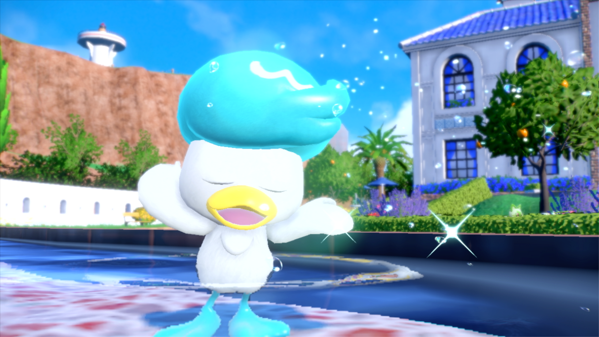

깃털에서 분비되는 젤이 물과 먼지를 튕겨 내기 때문에, 몸에는 항상 윤기가 납니다. 특히 머리의 털을 수분이 가득한 크림으로 손질하는데, 건조해지면 부스스하게 흐트러집니다. 포켓몬스터W 135화에 9세대 스타팅 포켓몬들 중 나오하, 뜨아거에 이어 3번째로 꾸왁스가 등장하였다. 머리를 다듬던 중 로켓단 삼인방이 몬스터볼을 던지자 이를 알아차리고, 곧바로 입에서 물대포를 발사해 로켓단 삼인방을 날려버린다. 고라파덕 - 골덕[14], 파오리(원종/가라르 폼) - 창파나이트에 이어 5번째로 나온 오리를 모티브로 한 포켓몬이다. 또한 엠페르트를 이은 2번째 조류 모티브 물타입 스타팅 포켓몬이다. 모티브가 오리이고 날 수 있을 법한 체형인데 비행 타입이 붙지 않았다. 물/비행은 방어적으로 상당히 우수한 타입 조합인데다가[16] 비행 타입이 붙으면 나오하의 풀 기술을 1배로 받고 오히려 자속 비행 공격으로 반격할 수 있기에 밸런스 조절을 한 것으로 보인다.[17] 심지어 진화하면서 날개는 자라지 않고 다리만 길어지며, 공중날기도 못 배운다. 그래도 조류인지라 브레이브버드나 날개치기 등의 몇몇 비행타입 기술은 배울 수 있다.
웨이니발은 두상이나 부리의 형태, 물갈퀴가 없고 뭉툭하게 나뉘어진 형태의 발가락을 볼 때 오리가 아닌 유라시아 물닭을 모티브로 삼은 것으로 보인다. 최종 진화형인 웨이니발의 어원은 웨이브 + 카니발로 추정되며, 꼬리가 부채 모양으로 펴지는 것을 보면 공작새 또한 모티브가 되었을 수도 있다. 12일자로 추가된 설명에 따르면 진화 과정에서 머리스타일→발 기술→춤 순으로 매진하는 것이 바뀐다. 인 게임상에서 뭔가 가벼워보이는 모션과는 달리 본인은 춤에 대해서 굉장히 진지하고 엄격하다는 설정이다.